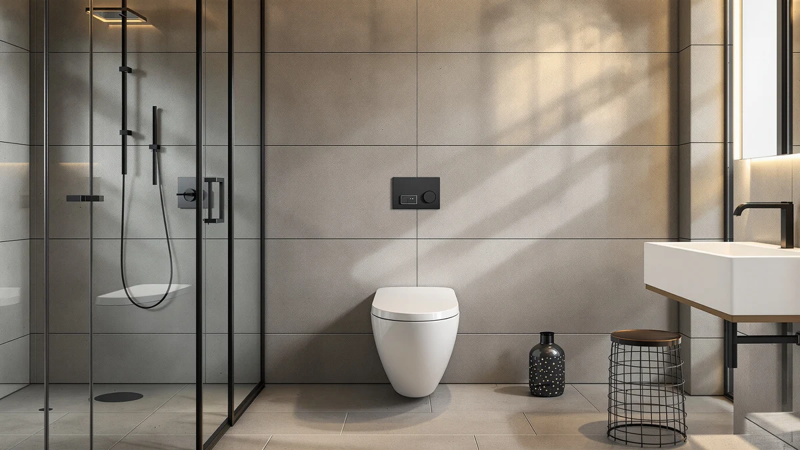

Things to Know Before You Buy
- Plastic and enameled wood seats need different products. Bleach can dull an enamel finish over time, so match the cleaner to the material before you scrub.
- The underside of the seat and the hinge assembly collect more bacteria than the top surface, so budget extra scrub time there.
- Most one-piece toilet seats use quick-release hinges that let you lift the seat off for a deeper clean without tools.
- Daily wipe-downs cut your deep-clean time in half and keep grime from setting into the hinge crevices.
- Skip abrasive powders on glossy or soft-close seats. They scratch the finish and make future buildup worse.
Learning how to clean a toilet seat properly takes about 25 minutes and stops the buildup that makes a bathroom smell stale between scrubs. Most people wipe the top surface and call it done, but the hinges, the underside, and the gap where the seat meets the bowl hold onto grime and bacteria long after the visible surface looks clean. A one-piece toilet makes the surrounding cleanup easier than a two-piece model, since there is no crevice between the tank and bowl to trap drips, but the seat itself still needs its own routine.
This guide walks you through five steps that cover the seat, the hinges, and the surfaces around it, using supplies you likely already have under the sink. We researched cleaning chemistry and manufacturer care guides to build a routine that works on both plastic and enameled wood seats without damaging the finish. If your seat is cracked, stained past saving, or the hinges stay loose no matter how much you clean, the picks near the end of this guide point you toward a replacement instead.
What You'll Need
Before you clean a toilet seat properly, gather everything below so you are not dripping cleaner while you dig through a cabinet.
- Supplies: disinfecting toilet cleaner or diluted bleach solution, distilled white vinegar, microfiber cloths
- Tools: rubber gloves, an old toothbrush or small scrub brush
Step 1: Ventilate the Room and Gather Your Supplies
Crack a window or switch on the exhaust fan before you touch the cleaner. Toilet bowl cleaners and diluted bleach solutions release fumes that build up fast in a small, enclosed bathroom, and good airflow keeps the job from turning into a headache.
Lay out everything you need within reach: your disinfecting cleaner, a small bowl of diluted white vinegar for mineral deposits, microfiber cloths, rubber gloves, and an old toothbrush. Having the toothbrush ready matters more than it sounds, since the hinge crevices are where a plain sponge cannot reach.
Put your gloves on now, not after you have already touched the seat. Toilet seats, especially around the hinges, carry more bacteria per square inch than most kitchen counters, and skipping the gloves is the most common shortcut people take when they clean a toilet seat in a hurry.
Step 2: Remove the Seat From Its Hinges
Most one-piece toilets sold in the last several years use quick-release hinges. Look for two small tabs or levers where the seat meets the bowl at the back. Press or slide them, and the whole seat and lid assembly lifts straight off without tools.
Removing the seat gives you access to the underside and the mounting posts, which is where the worst buildup collects and where a seat still attached to the bowl is nearly impossible to scrub properly. If your seat does not have quick-release hardware, you can still clean it in place. Tilt it all the way back against the tank so you can reach underneath.
Set the seat on a towel on a flat surface, like the bathtub edge or counter, so you can work on both sides without straining over the bowl. This step alone is what separates a quick wipe from an actual deep clean.
Step 3: Apply Cleaner and Let It Dwell
Coat the top surface, the underside, and the hinge posts with your disinfecting cleaner. If you are using a bleach solution, mix about one tablespoon of bleach per gallon of water rather than spraying it straight, since full-strength bleach can yellow plastic and dull enamel finishes over time.
Dwell time matters more than scrub pressure. Most disinfecting cleaners need three to ten minutes of contact time to break down grime and bacteria, and wiping the cleaner off immediately moves dirt around instead of removing it. Check the label on your specific product for the exact number.
While the cleaner sits on the seat, use this time to spray the bowl rim, the hinge area on the bowl itself, and the exterior of the tank. Letting everything dwell together saves you a second pass later and cleans the whole fixture, not only the seat.
Step 4: Scrub the Hinges and Underside
Grab the toothbrush and go straight for the hinge crevices, the mounting posts, and the small gap where the seat pad meets its plastic frame. These spots trap the most buildup because they are the hardest to reach with a flat cloth, and they are usually the reason a seat starts to smell even after a top-surface wipe.
For mineral deposits or hard water spots near the hinges, switch to the diluted white vinegar and let it sit on the spot for a minute before you scrub. Vinegar breaks down mineral buildup that plain disinfectant leaves behind, without the harshness of bleach on painted or enameled surfaces.
Once the crevices are clear, wipe the flat top and underside with a fresh microfiber cloth to lift the loosened grime. Flip the cloth to a clean side partway through, so you stop redistributing what you scrubbed off instead of removing it.
Step 5: Rinse, Dry, and Reinstall the Seat
Wipe down every surface you cleaned with a cloth dampened in plain water to remove leftover cleaner or vinegar residue. Skipping this step leaves a chemical film that attracts dust and can irritate skin on contact.
Dry the seat completely before you reinstall it. A damp seat left in a humid bathroom gives mold and bacteria the exact conditions they need to take hold again within days, undoing the work you did. A dry microfiber cloth handles this faster than air drying alone.
Snap the seat back onto the hinges until you feel it lock in place, then finish by wiping down the flush handle, the outside of the lid, and the base of the toilet where splashes land. Those surfaces get touched constantly and are easy to forget once the seat itself looks spotless. Wash your hands thoroughly once you are done, even though you wore gloves throughout.
Common Mistakes to Avoid
The biggest mistake people make when they clean a toilet seat is skipping the hinges entirely. A seat can look spotless on top while the mounting posts underneath hold weeks of buildup, and that is usually where odor comes from first.
Mixing cleaning products is the second common error. Combining bleach with ammonia-based cleaners or certain toilet bowl formulas creates toxic fumes in a small, poorly ventilated bathroom. Stick to one product at a time and rinse thoroughly before you switch to a different cleaner.
Using full-strength bleach directly on a plastic or enameled wood seat causes more harm than good. It yellows plastic over months of repeated use and strips the protective coating on enameled surfaces, leaving them more porous and harder to clean going forward. A diluted solution does the same disinfecting job without the damage.
Reinstalling the seat while it is still damp is another shortcut that backfires. Moisture trapped against the hinge posts creates the exact conditions mold needs, so the smell you eliminated can return within a week.
Finally, scrubbing only the seat and ignoring the surrounding fixtures, like the flush handle and the base, means you have cleaned one touchpoint while leaving the others just as contaminated as before.
Our Top Picks
If you have gone through this routine and the seat still looks stained, feels loose on its hinges, or the porcelain underneath has hairline cracks, no amount of cleaning fixes a fixture that is past its lifespan. We compared specs, pricing, and verified owner reviews across current one-piece toilets to find models with seats that resist staining and hinges built to last.

Editor's Pick
Elongated One Piece Toilet with
Owners report the seat's finish stays smooth and stain-resistant well past the point where older seats start to dull, and the quick-release hinges make routine cleaning simple.
$109.99
Check Price on Amazon
Best Value
BayRoll One Piece Sleek Modern
Reviewers consistently note the soft-close seat resists the yellowing that comes with repeated bleach cleanings, and the sleek design hides water spots between scrubs.
$249.00
Check Price on Amazon
Premium Choice
WinZo WZ5023 Tall One Piece
According to verified buyer feedback, the taller seat height and reinforced hinges hold up to frequent deep cleaning without loosening, a common complaint with lower-priced seats.
$418.99
Check Price on AmazonFrequently Asked Questions
How often should you clean a toilet seat?
Wipe the seat down daily with a disinfecting wipe or spray, and run the full five-step deep clean, including the hinges, once a week. Households with kids, pets, or multiple daily users benefit from moving to a twice-weekly deep clean.
Can you use bleach to clean a toilet seat?
Yes, but dilute it to about one tablespoon of bleach per gallon of water rather than applying it full strength. Undiluted bleach yellows plastic seats and strips the protective coating on enameled wood over repeated use.
How do you get yellow stains off a toilet seat?
A paste of baking soda and a small amount of hydrogen peroxide, left to sit for ten minutes before scrubbing, lifts most surface staining. Deep-set yellowing on plastic seats that have aged for years often will not fully reverse, since it comes from the plastic itself breaking down.
Why does a toilet seat smell even after cleaning?
The smell almost always comes from the hinges and mounting posts, not the visible seat surface. If a toothbrush and disinfectant have not reached those crevices, bacteria keeps building there even when the top looks and smells clean.
Should you remove the toilet seat to clean it properly?
Removing the seat gives you full access to the underside and hinge posts, which is where most buildup hides, so it is worth doing during your weekly deep clean. Quick-release hinges on most modern one-piece toilets make this a tool-free, minute-long step.
Verdict
Knowing how to clean a toilet seat properly comes down to reaching the parts you cannot see: the hinges, the mounting posts, and the underside where grime and bacteria actually collect. A quick wipe of the top surface handles appearances, but the five steps in this guide, ventilating first, removing the seat, letting the cleaner dwell, scrubbing the crevices, then drying fully before reinstalling, are what keep a bathroom sanitary between deep cleans. Stick to diluted cleaners rather than full-strength bleach, and you will avoid the yellowing and finish damage that shortens a seat's lifespan. If you have followed this routine and the seat still looks stained or the hinges feel loose no matter what you try, that is a sign of wear a cleaning product cannot reverse. The Lamanelle elongated one-piece toilet featured above pairs a stain-resistant seat with hinges built for frequent cleaning, making the next few years of upkeep considerably easier than what you are dealing with now.